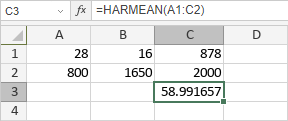

HARMEAN Funkcija
Funkcija HARMEAN je jedna od statističkih funkcija. Koristi se za izračunavanje harmonijske sredine liste argumenata.
Sinaksa
HARMEAN(broj1, [broj2], ...)
Funkcija HARMEAN ima sledeće argumente:
| Argument | Opis |
|---|---|
| broj1/2/n | Do 255 numeričkih vrednosti za koje želite da izračunate harmonijsku sredinu. |
Napomene
Kako primeniti funkciju HARMEAN.
Primeri
Slika ispod prikazuje rezultat funkcije HARMEAN.
